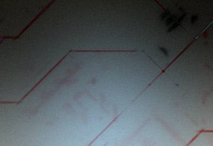

Fuentes
• ExclusiveMod: @moduleby404
• Canal: @TechnologyHacking
• Url: githacktools.blogspot.com
• Site: termuxtools.com/termux
• Web: termuxtech.com
• Learn: learntermux.tech
• Grupo: @HuntersSecurity
• Checking: @Termux_tutoriales
Tools Termux
• github.com/may215/awesome-termux-hacking
• githacktools.blogspot.com/search/label/Linux?m=1
• www.techncyber.com/2017/09/hacking-with-termux-app.html?m=1
• www.termuxtools.com/termux
• www.learntermux.tech
• www.termuxtech.com

Packs Starting
$ apt update && upgrade -y
$ apt install git curl wget -y
$ setterm --foreground | default red
$ termux-setup-storage
$ pkg install unstable-repo
$ apt install php -y
$ apt install vim -y
$ apt install python python2 -y
$ apt install perl ruby -y
$ apt install nmap -y
$ apt install hidra -y
$ apt install nano -y
$ apt install crunch -y
$ chmod 770 *
DeepSocietyü§ñWIKITERMUX
$ git clone https://github.com/DeepSociety/wiki-termux
$ cd wiki-termux
$ chmod 777 witest:
https://github.com/nixawkj/pentest-wiki

DISTRIBUCIONES LINUX TERMUX
Una distribución o distro de Linux es una versión personalizada del sistema operativo original, el kernel o núcleo de Linux, por lo general las encontramos para ordenadores PC.
Termux da un paso agigantado al proporcionar un paquete llamado proot-distro que se encarga de la gestión de las distribuciones de Linux dentro de Termux.
Se puede instalar este paquete con el comando:
$ pkg install proot-distro
Por ahora Termux admite las siguientes distribuciones:
- Alpine Linux (alias: alpine): la más pequeña de las distribuciones disponibles.
- Arch Linux (alias: archlinux)
- Kali Nethunter (alias: nethunter)
solo una construcción mínima..
- Ubuntu 20.04 (alias: ubuntu)
Para instalar la distribución, simplemente ejecutar comando:
$ proot-distro install
donde "" debe reemplazarse por la distribución elegida, por ejemplo, "alpine".
Después de la instalación, iniciar una sesión de shell ejecutando el siguiente comando:
$ proot-distro login
____________________
Descripción básica de la funcionalidad proot-distro disponible:
proot-distro list - muestra las distribuciones admitidas y su estado.
proot-distro install - instalar una distribución.
proot-distro login - iniciar un shell raíz para la distribución.
proot-distro remove - desinstalar la distribución.
proot-distro reset - reinstalar la distribución.
Ejecutar $ proot-distro help para info de uso o ver la web oficial en: wiki.termux.com

Sed consequat phasellus
Nunc blandit nisi ligula magna sodales lectus elementum non. Integer id venenatis velit.

Mauris id tellus arcu
Nunc blandit nisi ligula magna sodales lectus elementum non. Integer id venenatis velit.
Nunc vehicula id nulla
Nunc blandit nisi ligula magna sodales lectus elementum non. Integer id venenatis velit.

Neque et faucibus viverra
Nunc blandit nisi ligula magna sodales lectus elementum non. Integer id venenatis velit.

Mattis ante fermentum
Nunc blandit nisi ligula magna sodales lectus elementum non. Integer id venenatis velit.

Sed ac elementum arcu
Nunc blandit nisi ligula magna sodales lectus elementum non. Integer id venenatis velit.

Vehicula id nulla dignissim
Nunc blandit nisi ligula magna sodales lectus elementum non. Integer id venenatis velit.


{kind=link}
{kind=link}
{kind=link}
{kind=link}